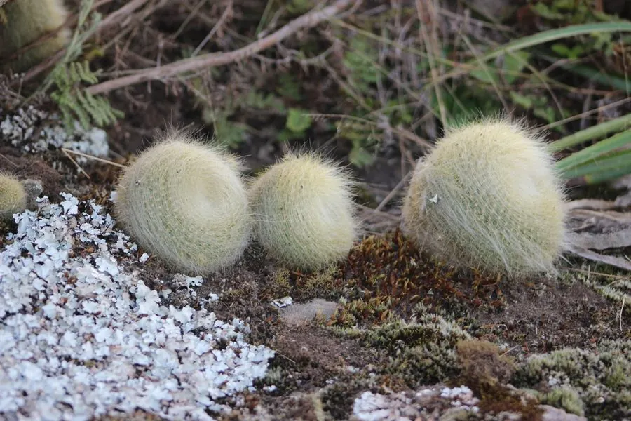

多肉植物 · 植物界
雪晃 Parodia haselbergii

仙人掌科锦绣玉属多年生肉质植物，球体密被白色短刺如覆白雪，橙红色小花环绕球顶开放，清新又热闹。
- 分类
- 门被子植物门纲木兰纲目石竹目科仙人掌科属锦绣玉属
- 栖息环境
- 原产巴西南部与乌拉圭的草原岩地，喜光耐旱
- 地理分布
- 原产巴西南部、乌拉圭；中国各地作为观赏仙人球栽培
- 保护级别
- 暂无评估；栽培观赏植物，不涉及保护等级
物种志
雪晃为仙人掌科锦绣玉属多年生肉质植物，球体扁球形，高约六至十厘米，直径八至十厘米，单生或丛生。棱约三十条，刺座密集，周刺白色、细短，密布球体，使植株呈雪白色；中刺数枚、颜色较深。花生于球体顶部，花冠漏斗状，橙红色至橙黄色，花径约两厘米，花期春季至初夏；浆果球形，成熟时红色，种子细小。
雪晃原产巴西南部和乌拉圭，中国各地作为观赏仙人球栽培。它喜光、耐旱，夏季高温时需适度遮阴；适宜疏松透气、排水良好的颗粒基质，忌积水和闷热。白色短刺覆满球体，像落了一层雪，橙红色小花环绕球顶开放，观赏效果极佳，是仙人球拼盆的常用品种。繁殖以播种和分株为主。
形态与习性
- 株型扁球形，单生或丛生
- 球径直径 8–10 cm，棱约 30 条
- 花期春季至初夏，花橙红色
- 光照喜光，夏季适度遮阴
- 水分耐旱，干透浇透
- 土壤疏松排水良好的颗粒土
- 主要用途仙人球盆栽、拼盆观赏
趣味知识
- 雪晃的白色短刺密布球体，远看像覆盖着一层薄雪。
- 它的花橙红色、花径约两厘米，环绕球顶开放，与白刺形成鲜明对比。
- 雪晃的棱多达三十条，是锦绣玉属中棱数较多的种类。